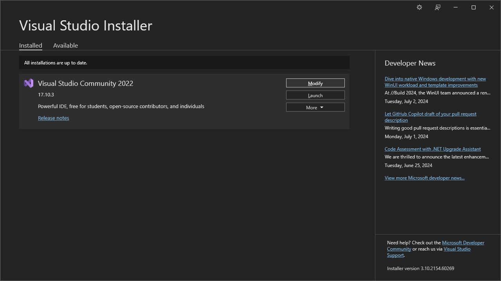
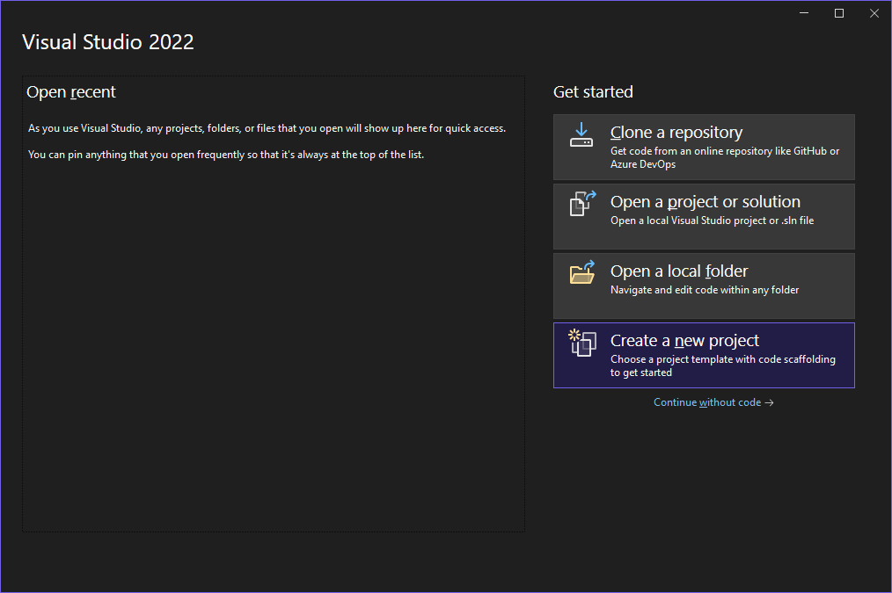
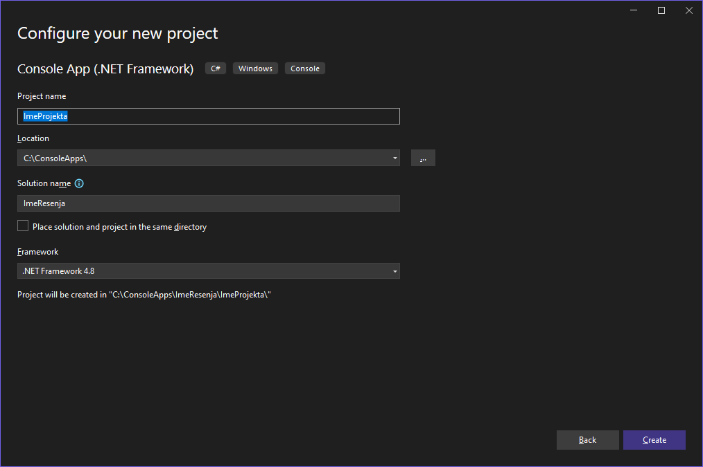

Припрема окружења и израда пројекта¶
Припрема радног окружења¶
Интегрисано развојно окружење Visual Studio Community Edition инсталирао си још на почетку првог разреда. Ако из неког разлога то ниси урадио, упутство за преузимање и инсталацију налази се у лекцији Microsoft Visual Studio IDE, курса „Програмирање I за информатичке профиле у електротехничким школама”.
Тада, приликом инсталације, одабрао си радни пакет
Desktop development with C++. Да би омогућио развојном окружењу да креира и
ради са C# .NET пројектима, потребно је да у траци задатака оперативног
система Windows кликнеш на Start дугме, па пронађеш и покренеш
Visual Studio Installer и кликнеш на дугме Modify:

За наставни предмет Програмирање у III разреду довољно је да одабереш радни
пакет .NET Desktop Development.

Од наставника веб-програмирања и других стручних предмета добићеш информације о
осталим неопходним радним пакетима за те предмете. Када си одабрао
.NET Desktop Development, кликни Modify, па кликни Yes да дозволиш
развојном окружењу Visual Studio да направи промене. Када се процес
преузимања и инсталације додатних фајлова заврши, радно окружење биће спремно
за нове пројекте у програмском језику C#.
.NET Framework, .NET Core или .NET¶
Пре него што започнеш са креирањем нових пројеката, битно је да разумеш разлику између развојних платформи .NET Framework, .NET Core и .NET.
.NET Framework платформа настала је почетком 2000-их година. Првобитни фокус био је на развоју десктоп апликације у оперативном систему Windows, али се касније проширио и на веб-апликације, сервисе и друге врсте софтвера искључиво за оперативне системе Windows. Поседује велику библиотеку класа познату као Base Class Library (BCL) која обезбеђује API за развој Windows апликација. Каже се да је платформа монолитна јер један велик оквир пружа све што је неопходно за развој и извршавање апликација. Битне верзије .NET Framework платформе су: 1.0, 2.0, 3.5, 4.0, 4.5 и последњe - 4.7.2, 4.8 и 4.8.1.
.NET Core платформа настала је 2016. године као нови вишеплатформски оквир отвореног кода. Дизајниран је да елиминише ограничења .NET Framework платформе и обезбеди модуларнију и свестранију платформу за развој апликација. Међуплатформска компатибилност омогућава програмерима да праве апликације које раде на ширем спектру оперативних система – Windows, MacOS и различитим дистрибуцијама оперативног система Linux. Каже се да је платформа модуларна јер је могуће укључити само библиотеке и компоненте које су неопходне, што узрокује бољим перформансама и бржим извршавањем. Битне верзије .NET Core платформе су: 1.0, 1.1, 2.0, 2.1 и 2.2.
.NET платформа је наследник платформи .NET Framework и .NET Core, настала 2019. године, почевши од верзије 5.0, а у време писања овог текста, значајне верзије су 6.0 (LTS), 7.0 и 8.0 (LTS). Значи, .NET Framework и .NET Core платформе се више као такве не развијају - развија се само једна обједињена .NET платформа.
У оквиру овог курса ти ћеш креирати .NET Framework пројекте у програмском језику C#. .NET Framework је платформа предвиђена планом наставе и учења, као и програмом матурског испита.
Креирање новог пројекта¶
На почетку наставног предмета Програмирање у III разреду креираћеш конзолне
апликације, а на крају, апликације са графичким корисничким интерфејсом за
Windows. Покрени развојно окружење Visual Studio и кликни на
Create a new project:

Одабери Console App (.NET Framework) и кликни Next (да би брже пронашао
овај тип пројекта у комбинованим оквирима, можеш одабрати C#, Windows и
Console):

Унеси име пројекта, локацију на којој ћеш сачувати пројекат, име решења које
може бити исто као и име пројекта (решење је контејнер за један или више
пројеката), одабери .NET Framework верзију и кликни Create:

Развојно окружење биће одмах спремно за рад: